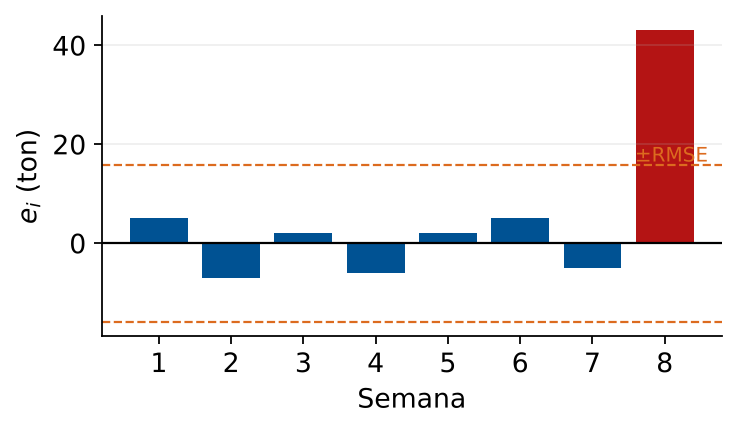

Error Cuadrático Medio (MSE) y RMSE
Evaluación de Precisión de Pronósticos Logísticos
Módulo 5 — Regresión y Análisis de Datos
Matemáticas 2 — Clase 24
Cátedra de Matemáticas 2
Ingeniería en Logística
Clase 24
Contenidos de la Clase
- Objetivos de Aprendizaje
- La Pregunta Práctica: ¿Es Suficientemente Bueno?
- Error Absoluto Medio (MAE)
- Error Cuadrático Medio (MSE)
- Raíz del Error Cuadrático Medio (RMSE)
- MAPE: Error Porcentual
- Comparación Visual: MAE vs RMSE
- Ejemplo: Pronóstico de Demanda Semanal
- Análisis del Outlier: Semana 8
- Usar RMSE para Elegir el Mejor Modelo
- Validación: Datos de Entrenamiento vs Prueba
- MATLAB: Calcular MAE, MSE, RMSE y MAPE
- MATLAB: Comparar Modelos y Validación Train/Test
- MATLAB: Visualización de Errores
- Caso: Evaluar el Modelo de Demanda
- Criterios de Aceptación del Modelo
- Resumen: Métricas de Error
- Punto de Decisión
- Tarea para la Clase 25
- Referencias
Objetivos de Aprendizaje
Al finalizar esta clase el estudiante será capaz de:
- Calcular MAE, MSE y RMSE para evaluar un modelo de pronóstico.
- Distinguir cuándo usar cada métrica según el contexto logístico.
- Comparar modelos alternativos usando RMSE como criterio.
- Implementar el cálculo de errores en MATLAB y visualizar la distribución.
- Decidir si un modelo es suficientemente bueno para operar.
Conexión con clases anteriores
Clases 21–23: construir y ajustar modelos de regresión.
Clase 24: medir qué tan bien pronostica ese modelo en la práctica.
Sin medición de error, no hay forma de saber si el modelo es útil.
La Pregunta Práctica: ¿Es Suficientemente Bueno?
Situación
el modelo de regresión ajustado tiene \(R^2 = 0.97\).
El gerente pregunta:
- ¿En cuánto nos equivocamos por envío?
- ¿Podemos confiar en este modelo para planificar?
- ¿Este modelo es mejor que el anterior?
- ¿El error es aceptable para nuestro presupuesto?
El \(R^2\) no responde estas preguntas.
Un \(R^2=0.97\) con datos de $1.000.000 implica errores diferentes que con datos de $500.
Necesitamos métricas de error
- MAE: error medio absoluto
- MSE: error cuadrático medio
- RMSE: raíz del error cuadrático medio
- MAPE: error porcentual medio absoluto
Cada una mide algo distinto y tiene distintos usos operativos.
Error Absoluto Medio (MAE)
Definición
\[ \text{MAE} = \frac{1}{n}\sum_{i=1}^{n}|y_i - \hat{y}_i| = \frac{1}{n}\sum_{i=1}^{n}|e_i| \]
Promedio de los errores absolutos. Se mide en las mismas unidades que \(y\).
Propiedades
- Fácil de interpretar: "en promedio nos equivocamos en X unidades"
- Robusto ante outliers (no penaliza el cuadrado)
- Mismas unidades que \(y\)
- Todos los errores pesan igual
Ejemplo logístico
Pronóstico de costos de envío ($):
\[ \text{MAE} = \$23.5 \]
"En promedio, el modelo se equivoca en $23.5 por envío."
Uso: cuando todos los errores tienen igual costo operativo.
Error Cuadrático Medio (MSE)
Definición
\[ \text{MSE} = \frac{1}{n}\sum_{i=1}^{n}(y_i - \hat{y}_i)^2 = \frac{1}{n}\sum_{i=1}^{n}e_i^2 \]
Promedio de los cuadrados de los errores.
Unidades: \([\text{unid de }y]^2\).
Propiedades
- Penaliza errores grandes desproporcionadamente
- Diferenciable (útil en optimización)
- Sensible a outliers
- Unidades al cuadrado (difícil de interpretar directamente)
- Conexión directa con MCO: minimizar MSE = mínimos cuadrados
Cuándo usar MSE
Cuando los errores grandes son mucho peores que los pequeños.
Ejemplo: en logística, un error de $1.000 no es simplemente "10 veces peor" que uno de $100; puede causar pérdida del cliente, multas contractuales o ruptura de stock.
El MSE penaliza estos casos extremos automáticamente.
Raíz del Error Cuadrático Medio (RMSE)
Definición
\[ \text{RMSE} = \sqrt{\text{MSE}} = \sqrt{\frac{1}{n}\sum_{i=1}^{n}(y_i-\hat{y}_i)^2} \]
Mismas unidades que \(y\). La métrica más usada en práctica.
¿Por qué RMSE es preferida?
- Mismas unidades que \(y\) (interpretable)
- Penaliza errores grandes (hereda del MSE)
- Comparable con MAE: si RMSE \(\gg\) MAE, hay outliers influyentes
- Estándar en competencias de ML y evaluación de modelos
Relación con \(s_e\) de la regresión
El \(s_e\) del ajuste es:
\[ s_e = \sqrt{\frac{\text{SCR}}{n-k-1}} \approx \text{RMSE} \]
La diferencia es el denominador: \(n\) vs \(n-k-1\).
Con \(n\) grande, son casi iguales.
RMSE usa \(n\) (para evaluación); \(s_e\) usa \(n-k-1\) (para inferencia estadística).
MAPE: Error Porcentual
Definición
\[ \text{MAPE} = \frac{100}{n}\sum_{i=1}^{n}\left|\frac{y_i - \hat{y}_i}{y_i}\right|\% \]
Error relativo promedio. Adimensional (porcentaje).
Ventajas
- Fácil de comunicar a gerencia ("nos equivocamos en X%")
- Comparable entre productos o rutas de distinta escala
- Criterio de aceptación directo: <5%, <10%, etc.
Limitaciones
- No definido cuando \(y_i = 0\)
- Sesgado para valores pequeños de \(y_i\)
| MAPE | Calidad del pronóstico |
|---|
| < 5% | Excelente |
| 5–10% | Muy bueno |
| 10–20% | Aceptable |
| 20–50% | Débil |
| > 50% | Inaceptable |
Criterio general; ajustar según industria.
Comparación Visual: MAE vs RMSE
Regla práctica
Si RMSE \(\gg\) MAE: hay errores grandes (outliers) que dominan.
Si RMSE \(\approx\) MAE: los errores son uniformes, sin valores extremos.
Ejemplo: Pronóstico de Demanda Semanal
Un modelo pronostica la demanda semanal (toneladas) en 8 períodos:
| Semana | \(y_i\) (real) | \(\hat{y}_i\) (pron.) | \(e_i\) | \(|e_i|\) | \(e_i^2\) |
|---|
| 1 | 120 | 115 | +5 | 5 | 25 |
| 2 | 95 | 102 | -7 | 7 | 49 |
| 3 | 140 | 138 | +2 | 2 | 4 |
| 4 | 85 | 91 | -6 | 6 | 36 |
| 5 | 110 | 108 | +2 | 2 | 4 |
| 6 | 130 | 125 | +5 | 5 | 25 |
| 7 | 75 | 80 | -5 | 5 | 25 |
| 8 | 155 | 112 | +43 | 43 | 1849 |
| Total | | | | 75 | 2017 |
\[ \text{MAE} = \frac{75}{8} = 9.375\text{ ton} \qquad \text{MSE} = \frac{2017}{8} = 252.1\text{ ton}^2 \qquad \text{RMSE} = \sqrt{252.1} = 15.88\text{ ton} \]
Efecto del outlier (semana 8)
RMSE (15.88) \(\gg\) MAE (9.375). La semana 8 (\(e_8 = +43\)) domina el RMSE.
Sin la semana 8: MAE=4.6, RMSE=4.9 — mucho mejor.
El modelo funciona bien en 7 de 8 semanas.
Análisis del Outlier: Semana 8

La semana 8 (en rojo) concentra el error
¿Qué ocurrió la semana 8?
La demanda real fue 155 ton pero el pronóstico fue 112 ton (error = +43 ton, 28%).
Posibles causas
- Evento especial no incluido en el modelo (feriado, promo, evento deportivo)
- Error de registro en los datos reales
- Cambio estructural en la demanda (nuevo cliente grande)
- Efecto estacional no capturado por el modelo lineal
Acciones
- Investigar: determinar la causa antes de actuar.
- Corregir: si fue error de datos, corregirlo y reajustar el modelo.
- Modelar: si fue evento especial, agregar una variable dummy al modelo.
- Aceptar: si es variabilidad inherente, ampliar el margen de inventario de seguridad.
Decisión basada en el error
Si el RMSE es mayor que el nivel de servicio aceptable, el modelo no es suficiente.
Con RMSE=15.88 ton y demanda media=114 ton: error relativo \(\approx 14\%\). Límite: mejorar modelo.
Usar RMSE para Elegir el Mejor Modelo
Tres modelos alternativos para pronosticar la demanda:
| Modelo | Descripción | \(R^2\) | MAE | RMSE | MAPE |
|---|
| M1 | Regresión lineal simple | 0.920 | 18.2 | 24.1 | 14.3% |
| M2 | Regresión múltiple (3 var) | 0.989 | 8.5 | 11.3 | 6.8% |
| M3 | Promedio móvil 4 semanas | 0.851 | 22.4 | 31.8 | 18.7% |
Lectura de la tabla
- M2 gana en todas las métricas: menor MAE, RMSE y MAPE.
- El \(R^2\) de M1 (0.920) parece "bueno", pero su RMSE (24.1) es el doble de M2 (11.3).
- M3 (promedio móvil) es el peor: simple pero poco preciso para este dataset.
Regla de selección
Para comparar modelos con el mismo dataset: menor RMSE = mejor modelo.
Si los modelos se aplican a distintos datasets: usar MAPE (relativo, comparable).
Validación: Datos de Entrenamiento vs Prueba
Problema del sobreajuste: un modelo puede tener RMSE muy bajo en los datos con los que se ajustó, pero predecir mal datos nuevos.
Protocolo correcto
- Dividir datos: 70-80% train, 20-30% test
- Ajustar el modelo solo con train
- Calcular RMSE en test (datos no vistos)
- El RMSE en test es la medida real de performance
Sobreajuste detectado
Si RMSE\(_{\text{train}}\) \(\ll\) RMSE\(_{\text{test}}\): el modelo memorizó los datos de entrenamiento.
Agregar regularización o reducir el número de variables.
MATLAB: Calcular MAE, MSE, RMSE y MAPE
% Valores reales y pronosticados
y_real = [120; 95; 140; 85; 110; 130; 75; 155];
y_pred = [115; 102; 138; 91; 108; 125; 80; 112];
% Errores
e = y_real - y_pred;
% Metricas
MAE = mean(abs(e));
MSE = mean(e.^2);
RMSE = sqrt(MSE);
MAPE = mean(abs(e ./ y_real)) * 100;
fprintf('=== METRICAS DE ERROR ===\n')
fprintf('MAE = %.4f ton\n', MAE)
fprintf('MSE = %.4f ton^2\n', MSE)
fprintf('RMSE = %.4f ton\n', RMSE)
fprintf('MAPE = %.4f%%\n', MAPE)
fprintf('\nRMSE/MAE = %.2f (1=uniforme; >1.5 hay outliers)\n', RMSE/MAE)
% Diagnostico de outliers
fprintf('\nErrores estandarizados:\n')
for i = 1:length(e)
e_std = e(i)/RMSE;
marca = '';
if abs(e_std) > 2, marca = ' <-- OUTLIER'; end
fprintf(' Semana %d: e=%5.1f, e_std=%6.2f%s\n', i, e(i), e_std, marca)
end
MATLAB: Comparar Modelos y Validación Train/Test
% Dataset: semanas, demanda observada
rng(1); % semilla: resultados reproducibles
t = (1:20)';
y = 100 + 3*t + 10*randn(20,1); % tendencia + ruido
% Division 70/30
n_train = round(0.7 * length(t));
t_train = t(1:n_train); y_train = y(1:n_train);
t_test = t(n_train+1:end); y_test = y(n_train+1:end);
% Modelo 1: regresion lineal simple
p1 = polyfit(t_train, y_train, 1);
y_pred_train1 = polyval(p1, t_train);
y_pred_test1 = polyval(p1, t_test);
% Modelo 2: promedio movil (referencia)
y_pred_ma = movmean(y_train, 3);
y_pred_ma_test = repmat(mean(y_train(end-2:end)), length(t_test), 1);
% Calcular RMSE train y test para cada modelo
rmse = @(yreal, ypred) sqrt(mean((yreal-ypred).^2));
fprintf('%-20s %-14s %-14s\n', 'Modelo', 'RMSE train', 'RMSE test')
fprintf('%s\n', repmat('-', 48, 1))
fprintf('%-20s %-14.4f %-14.4f\n', 'Regresion lineal', ...
rmse(y_train, y_pred_train1), rmse(y_test, y_pred_test1))
fprintf('%-20s %-14.4f %-14.4f\n', 'Promedio movil', ...
rmse(y_train(3:end), y_pred_ma(3:end)), rmse(y_test, y_pred_ma_test))
Interpretación del output
Si RMSE\(_\text{test}\) es mucho mayor que RMSE\(_\text{train}\): hay sobreajuste.
El modelo que tenga menor RMSE\(_\text{test}\) es el preferido para producción.
MATLAB: Visualización de Errores
% Grafico de pronostico vs real con banda de error
figure('Name','Clase 24 - Pronostico vs Real','Position',[50 50 900 400]);
subplot(1,2,1)
plot(t_train, y_train, 'bo-', 'LineWidth',1.5,'DisplayName','Real (train)'); hold on
plot(t_test, y_test, 'rs-', 'LineWidth',1.5,'DisplayName','Real (test)')
plot(t, polyval(p1,t), 'k--','LineWidth',2,'DisplayName','Pronostico M1')
% Banda de error +/- RMSE
rmse_test = rmse(y_test, y_pred_test1);
fill([t_test; flipud(t_test)], ...
[y_pred_test1+rmse_test; flipud(y_pred_test1-rmse_test)], ...
'k','FaceAlpha',0.1,'EdgeColor','none','DisplayName','+-RMSE')
xline(n_train+0.5,'k:','LineWidth',1.5)
legend('Location','northwest','FontSize',9); grid on
xlabel('Semana'); ylabel('Demanda (ton)')
title('Pronostico vs Real con banda RMSE')
subplot(1,2,2)
e_test = y_test - y_pred_test1;
bar(t_test, e_test, 'FaceColor',[0.85 0.33 0.10])
yline(0,'k-','LineWidth',1.5)
yline(rmse_test,'r--'); yline(-rmse_test,'r--')
xlabel('Semana (test)'); ylabel('Error (ton)')
title('Residuos en conjunto de prueba')
grid on
Caso: Evaluar el Modelo de Demanda
Situación: la empresa usa el modelo de regresión para planificar inventario.
El RMSE en datos de prueba es 18 toneladas.
La demanda media es 120 toneladas por semana.
Impacto operativo del RMSE
- Inventario de seguridad necesario: \(\approx 2 \times\) RMSE = 36 toneladas
- Costo de almacenamiento de 36 ton: si $5/ton/semana → $180/semana
- Si se mejora el modelo y RMSE baja a 10 ton: inventario de seguridad = 20 ton, ahorro = $80/semana = $4.160/año
Fórmula práctica de inventario de seguridad:
\[ IS = z_\alpha \times \text{RMSE} \]
donde \(z_\alpha\) es el factor de nivel de servicio (\(z_{95\%} = 1.645\), \(z_{99\%} = 2.326\)).
Nivel de servicio 95%
\(IS = 1.645 \times 18 = 29.6\) toneladas.
Si el RMSE baja a 10: \(IS = 16.5\) toneladas. Ahorro real y cuantificable.
Criterios de Aceptación del Modelo
| Uso del pronóstico | MAPE aceptable | Razón |
|---|
| Planificación de producción | <10% | Permite ajuste semanal |
| Compra de materias primas | <8% | Compromisos con proveedor |
| Presupuesto anual | <5% | Precisión financiera requerida |
| Contrato de suministro | <3% | Penalidades contractuales |
Proceso de decisión
- Definir el criterio de aceptación según uso
- Calcular RMSE y MAPE en datos de prueba
- Si cumple: desplegar el modelo
- Si no: mejorar el modelo o aumentar el inventario de seguridad
Trampa del MAPE
Un MAPE bajo no garantiza que el modelo sea útil. Si la demanda media es 1.000 ton y el MAPE es 5%, el error medio es 50 ton, que puede ser inaceptable si el costo de almacenamiento es alto.
Siempre traducir el error a impacto económico.
Resumen: Métricas de Error
| Métrica | Fórmula | Unidades | Outliers | Uso típico |
|---|
| MAE | \(\frac{1}{n}\sum|e_i|\) | \([y]\) | Robusto | Comunicar a operaciones |
| MSE | \(\frac{1}{n}\sum e_i^2\) | \([y]^2\) | Sensible | Optimización, derivación |
| RMSE | \(\sqrt{\text{MSE}}\) | \([y]\) | Sensible | Comparar modelos, IS |
| MAPE | \(\frac{100}{n}\sum|e_i/y_i|\) | % | Moderado | Comparar escalas distintas |
Relaciones clave
- \(\text{RMSE} \geq \text{MAE}\) siempre (por desigualdad de Jensen)
- \(\text{RMSE} = \text{MAE}\) solo si todos los errores son iguales
- \(\text{RMSE}/\text{MAE} > 1.5\): hay errores grandes influyentes
- \(\text{RMSE} \approx s_e\) cuando \(n \gg k\)
Punto de Decisión
Pregunta de Cierre
El modelo de pronóstico de demanda tiene RMSE=18 ton en datos de prueba. La demanda media es 120 ton/semana y el costo de ruptura de stock es $500/ton. El costo de inventario de seguridad es $4/ton/semana.
¿Es suficientemente bueno el modelo para operar? ¿Cuál es el costo óptimo de inventario de seguridad?
Error relativo del modelo
\(\text{RMSE}/\bar y = 18/120 = 15\%\) (aproximación del MAPE).
Para planificación de producción (criterio <10%):
NO aprobado. Mejorar el modelo.
IS óptimo
Con nivel 95%: \(IS = 1.645\times18 \approx 30\) ton.
Costo: \(30\times\$4 = \$120\)/semana.
Sin IS, la demanda supera al pronóstico ~50% de las semanas; faltante esperado \(\approx 0.4\times\text{RMSE}=7.2\) ton \(\Rightarrow 7.2\times\$500\approx\$3.600\)/semana.
El IS es claramente rentable.
Tarea para la Clase 25
Lecturas
- Montgomery, Cap. 5: Regresión polinomial — extensión del modelo lineal
- Montgomery, Cap. 5.1: Polinomios de grado 2 (cuadrático)
Ejercicio preparatorio
Con los datos de demanda del script
clase24_mse_rmse.m:
- Calcular MAE, MSE, RMSE y MAPE para el modelo lineal.
- Dividir en train (semanas 1–14) y test (semanas 15–20).
- Ajustar el modelo con train y calcular RMSE en test.
- ¿El RMSE en test es mayor que en train? ¿Cuánto?
- Proponer una mejora al modelo basada en el gráfico de residuos.
Próxima clase 25
Regresión cuadrática — identificar comportamientos no lineales en demanda estacional
Referencias
- Montgomery, D.C., Peck, E.A. & Vining, G.G. (2012). Introduction to Linear Regression Analysis (5th ed.). Wiley. Cap. 2.4 (MSE y RMSE), Cap. 3.4 (Validación de modelos).
- Hyndman, R.J. & Athanasopoulos, G. (2021). Forecasting: Principles and Practice (3rd ed.). OTexts. Cap. 5 (Evaluación de pronósticos). Libre en https://otexts.com/fpp3/
- Makridakis, S., Wheelwright, S. & Hyndman, R.J. (1998). Forecasting: Methods and Applications (3rd ed.). Wiley. Cap. 2.
- MATLAB Documentation.
movmean, rmse, mae. https://www.mathworks.com/help/matlab/
- Material propio: Dataset demanda estacional, Script
clase24_mse_rmse.m.
Matemáticas 2 — Clase 24 | MSE y RMSE
¡Hasta la próxima clase!
Clase 25: Regresión Cuadrática
contacto@mat2logistica.edu